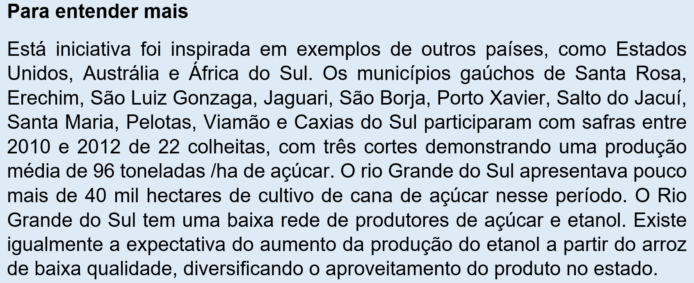

Capítulo 5: As Práticas Corporais Rítmicas e a Cana de Açúcar
A educação física escolar tem como eixo temático explorar a cultura do movimento que abrangem diferentes aspectos, como os esportes, os exercícios físicos, as práticas corporais alternativas e de aventura, e, as práticas corporais rítmicas. Neste capítulo vamos abordar a importância das práticas corporais rítmicas na formação do indivíduo. Trazendo reflexões que vão muito além das tradicionais coreografias festivas que costumam demonstrar muito superficialmente o potencial transformador e a existência da dança ou de práticas corporais rítmicas no ambiente escolar.
As práticas corporais rítmicas costumam ser erroneamente pensadas como apenas manifestações da cultura através da dança. Porém, o ritmo é fator importantíssimo na formação e desenvolvimento do indivíduo. Ele é a coordenação motora em si, promovendo a integração corporal e psíquica, permitindo um amplo espaço de experiências subjetivas no aspecto emocional.
Todos concordamos com essa afirmativa. Provavelmente lembramos de nossas experiências motoras na infância, dos jogos, brincadeiras e danças. Uma rápida recordação das atividades que gostávamos de realizar quando criança já nos coloca diante de variadas situações em que o ritmo fazia parte de nossas atividades. E nossas atividades profissionais também são constantemente marcadas pela integração de movimentos e pensamentos ritmados. Entretanto, como posso trazer uma experiência corporal rítmica para a realidade da indústria? O que nos faz lembrar que nesse capítulo tentaremos estabelecer uma conexão entre a indústria alimentícia, petrolífera e química com práticas corporais rítmicas.
Usaremos um vegetal de grande importância econômica para nosso país que será capaz de englobar todos os ramos industriais recém citados. Estamos falando da Cana de Açucar. Planta essa que serve desde alimento ao gado, quanto a produção de açúcar, álcool combustível ou produção de plásticos verde.
A importância do ritmo
Você já percebeu como nossa vida é marcada por ritmos? Antes mesmo de nascer sua mãe já canta para que você se acalme dentro da barriga, seu coração já bate cadenciado. Ao nascer seus movimentos são espontâneos e ainda meio sem jeito, mas seu corpo já tem hora para se alimentar e dormir, sua respiração reage ao seu estado emocional. Existem diversas formas de classificar o ritmo, ele pode ser espontâneo, natural ou biológico, pode ser classificado quanto a sua velocidade, etc.
Talvez você ainda não tenha compreendido como o ritmo é importante em nosso cotidiano. Você já foi chamado de desafinado enquanto cantarolava uma música? Isso significa que certamente você não estava conseguindo acompanhar as mudanças de ritmo representados pela melodia da canção. O mesmo pode ser pensando na prática de um esporte ou ao dançar uma música. Ficou mais fácil agora?
A palavra ritmo vem do grego rhytmos, e significa, aquilo que flui, que se move, um movimento regulado. Possuir ritmo é algo natural ao ser humano, é intrínseco ao seu desenvolvimento. Entretanto, o ritmo entre os indivíduos não é igual, nem é manifestado da mesma forma.
O período mais apropriado para se trabalhar o ritmo é a infância, os primeiros anos de vida. A criança tem seu próprio ritmo, por exemplo, a espontaneidade do ato de bater palmas em brincadeiras ou acompanhando o estímulo de adultos, bater brinquedos. Trabalhar o ritmo e a expressão do mesmo é sedimentar a coordenação corporal do indivíduo ao longo de sua vida.
A cana de açúcar
A cana de açúcar, cultura amplamente difundida em outras regiões do Brasil, tem diferentes utilidades, passando pela produção de cachaça, melaço, açúcar, alimento para animais até a produção de álcool veicular ou plásticos verdes. A cana de açúcar é bastante empregada pelo agricultor familiar, principalmente na produção da cachaça. O estado do Rio Grande do Sul é o segundo mais produtor de cachaça do país, com mais de 1500 alambiques. Porém, nosso estado não se destaca no refino da planta contribuindo muito pouco na produção de açúcar e combustível. O Brasil é o maior produtor mundial de cana de açúcar.
Um dos grandes empecilhos para o cultivo desta cultura em nosso estado é o clima. Durante muitos anos se tem tentado encontrar variedades da planta que seja resiste ao frio. A Rede Universitária para o Desenvolvimento do Setor Sucroenergético (Ridesa) e a Embrapa Clima Temperado tem trabalhado em conjunto para produzir variedades geneticamente modificadas que sejam mais resistentes ao frio e as secas.

O refino da cana de açúcar para produção de diferentes tipos de açúcar e de combustível movimentam grande quantidade de recursos, o que atraem a atenção de muitos outros países e investidores estrangeiros. Além disso, com a busca da diminuição do aquecimento climático investir em combustíveis renováveis torna-se ecologicamente atraente. O baixo índice de poluição, se comparado, aos combustíveis derivados do petróleo, coloca o álcool produzido a partir da cana de açúcar como um produto de viabilidade ecológica, e na vanguarda para a conquista de créditos de carbono.
A cana de açúcar tem um ciclo de produção extremamente eficiente, aproveitando-se toda a estrutura da planta para a composição de diferentes produtos. O Brasil produz quase 40 mil toneladas de açúcar anualmente (segundo o ministério da agricultura), porém esse número vem caindo nos últimos anos. Dois fatores podem ter ajudado nesse desempenho, a migração do produtor de açúcar para a produção do etanol e as diversas campanhas contra a obesidade, onde o açúcar é apontado como um dos maiores vilões.
Açúcar x Obesidade
Nos últimos tempos nos acostumamos a ver e ouvir campanhas que estimulam a diminuição do consumo de açúcar, que consumido em grande quantidade pode ocasionar obesidade e diabetes tipo 2. O açúcar, ao contrário do que pensa a maioria das pessoas não está apenas em alimentos doces, massas e pães também contêm grande quantidade de açúcar. Refrigerantes e doces são normalmente apontados como os principais vilões do sobrepeso devido a rápida absorção do açúcar pelo organismo, já alimentos como massas e pães tem um ritmo mais lento de absorção do açúcar na forma de carboidrato.
Ao nos alimentarmos aquilo que ingerimos passa pelo intestino, o pâncreas ao ser avisado da existência de glicose libera a insulina, este hormônio é responsável por permitir que o açúcar penetre nas células, por exemplo servindo de fonte de energia para os músculos. Sempre que ingerimos mais açúcar que o necessário o excedente acaba permanecendo no organismo sob a forma de gordura. Ao nos alimentarmos diariamente com excesso de açúcar exigimos que o pâncreas produza mais insulina e esse excesso acabará sendo alocado no tecido adiposo.
O açúcar mais aconselhado ao consumo é o mascavo, porém, além de mais caro adoça menos. Algumas pessoas optam pelo adoçante, entretanto, estudos vem demonstrando que apesar de não servir eficientemente como fonte energética para o organismo seu excesso tem efeitos colaterais como a retenção de líquidos e a obesidade.
Dança como manifestação cultural
Nesse contexto de aumento dos casos de obesidade as práticas corporais rítmicas poderiam muito bem ser uma alternativa para a busca de perda de peso e implementação de programas que visem elevar a qualidade de vida das pessoas. Apesar das práticas corporais rítmicas se apropriar de diversas formas de manifestação corporal a dança sem dúvida é a mais popular delas.
E a dança pode ser estruturada de diferentes formas contextualizando história, estética, expressão crítica, ser vista com olhar sociológico ou antropológico, pelo aspecto musical, sem excluir conceitos de anatomia, fisiologia e cinesiologia. A dança tem um espectro muito amplo de uso nas práticas de educação física, sem deixar em nenhum momento de ser uma fonte de condicionamento físico.
E o poder de atração da dança vai além das aulas de educação física, pois se existem pessoas que não praticam atividades físicas por falta de interesse ou vontade, muitas delas podem ser conquistadas pela dança em seu contexto cultural regionalizado. Os Centros de tradições gaúchas e os cursos de dança de salão são a prova disso. Não são poucas as pessoas que preferem fazer uma atividade física dançando ao invés de praticar um esporte ou frequentar uma academia. Essas expressões rítmicas regionalizadas como o samba, frevo, maracatu ou danças típicas do Rio Grande do Sul são um campo muito fértil para se explorar devendo o professor pensar no aluno em seus vários aspectos.
Tratar da história e cultura de um povo trabalhando a multidisciplinariedade do conteúdo, preparar aquecimentos e alongamentos específicos pré e pós danças, trabalhar a interação entre os participantes colaborando com a autoestima. Sem contar os inúmeros fatores positivos que a prática de uma atividade física irá propiciar aos participantes. A dança se apresenta como uma excelente ferramenta de transformação do indivíduo, e se formos pensar pelo aspecto do aumento dos casos de obesidade, mesmo entre adolescente, pode representar uma oportunidade de inclusão social para aquele jovem que se sente infeliz com seu próprio corpo e por baixa estima prefere se isolar.
Como vemos a dança, mesmo se a reduzirmos em seu aspecto cultural regional, tem formas muito variadas de contribuir para a formação de indivíduos mais saudáveis física e emocionalmente.
Ação e Reflexão
As expressões corporais rítmicas não podem ser estigmatizadas como sendo apenas apresentações coreografadas em dias de festas escolares. Cabe ao professor de educação física explorar de modo mais amplo as possibilidades desse eixo temático. Incluir jogos rítmicos, explorar manifestações culturais aproveitando a possibilidade para inserir aspectos históricos, geográficos e sociais é o desafio que estimulamos professor e aluno a buscar.
Atividade: Explorando a dança em seu aspecto cultural, escolha um estilo musical que agrade professores e alunos e trace um programa de atividades. Busque conhecer a história e aspectos culturais por detrás desse estilo de dança, suas origens e significados. Solicite ao professor que prepare sessões onde possam praticar a dança escolhida, não esquecendo de atividades de aquecimento e alongamentos, antes e depois de dançar.
Devido ao forte significado subjetivo que expressões corporais rítmicas possuem, sendo também por isso, classificadas como uma forma de arte. Estimulamos você a refletir sobre as sensações que uma aula de dança como a que propomos acima produz nos participantes. Como você se sentiu? No que você pensou enquanto dançava? Será que você consegue perceber o ritmo durante os movimentos e com ele obter sintonia?
Atletas tendem a possuir melhor percepção corporal, conseguindo com isso perceber com maior facilidade as sensações e impressões que seu corpo apresenta. O hábito de praticar atividades físicas irá com certeza influenciar em uma melhora da qualidade de vida, mas igualmente melhorará sua percepção quanto a limitações e impressões emocionais que seu corpo demonstre através de diversos sinais. Doenças psicossomáticas são um reflexo do ritmo acelerado de nossa sociedade atual. Quem sabe se dançando você não encontrará um atenuante para muitos de seus problemas e dificuldades emocionais?
O que aprendi
Vimos nesse capítulo que atividades de expressões rítmicas vão muito além das apresentações em festas escolares. Existe a necessidade de se reinventar utilizando atividades como a dança em contextos mais amplos. Explorando o ritmo ficou evidente que mesmo sem perceber ele está presente incessantemente em nossas vidas, desde a respiração ao pulsar do coração, da espontaneidade infantil as atividades da vida cotidiana adulta ele nos acompanha os passos. Pular corda pode ser uma excelente opção para trabalhar o ritmo.
Justamente nesse contexto que inserimos a possibilidade de se utilizar a dança, como manifestação cultural regionalizada, explorando movimentos como os Centros de Tradições Gaúchas, para estimular as pessoas a prática de uma atividade física rítmica. Dançando podemos estimular hábitos mais saudáveis, controlar a quantidade de açucares no organismo e explorar o aspecto social e emocional que a dança possibilita.
Pois, além de uma atividade física, vista sob a ótica da arte a dança emociona, desencadeando impressões que podem facilitar o indivíduo a lidar consigo mesmo e sua vida afetiva. Portanto, as práticas corporais rítmicas permitem uma grande opção de formas de atividade, podendo ser exploradas de diferentes maneiras dependendo da criatividade dos envolvidos.